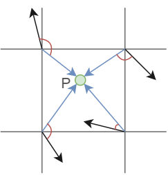

Perlin Noise 2D
To generate a 2D perlin noise, first a grid of random numbers has to be generated. Each random number will then be converted to a random vector. This is simply made by multiplying the random numbyer by two pi to get an angle and then the x and y value of the vector can be calculated with the sinus of the angle \( x = sin(2\pi*alpha)\) and the cosinus of the angle \( y = cos(2\pi*alpha)\). To sample a perlin noise point, the four cornes of the square, where the point lies are used (red point in the visualization).

For each corner vector, the distance vector of the point to the corner is calculated,
displayed as the blue arrows in the visualization. Now for each corner vector and the corresponding distance vector the dot product is calculated, which leaves
us with 4 values between 1 and -1 (if normalized vectors). Now all four values are interpolated and the results is a perlin noise value. The result is a noise map
with no big value jumps of next values (with cottect interpolation polynomial). The random vectors can be saved into an array, so they wont change during the calculations.
This procedure can be also used for higher dimensional perlin noise, but it will be very computational expensive.